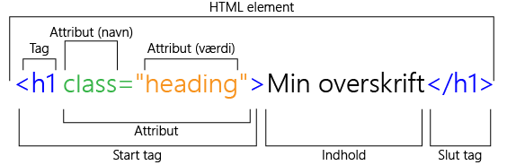
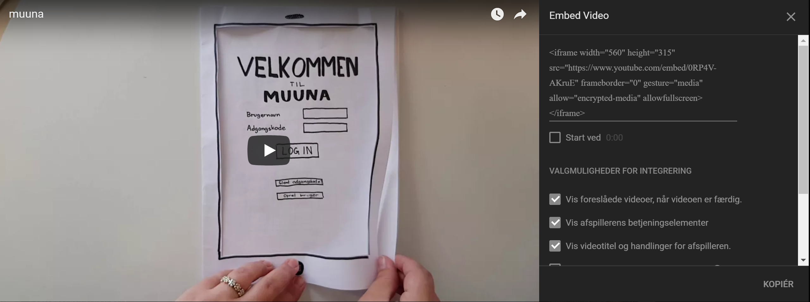

HTML
HTML står for HyperText Markup Language, og det er et kodesprog, der bruges i forbindelse med opbygning af websites. Stylingmulighederne ved brug af ren HTML er yderst begrænsede, men det kan bruges til strukturering af et website, og derved kan HTML bestemme rækkefølgen af indholdet på websitet. Skal man kode i HTML, skal man bruge en editor, men man kan principielt godt benytte sig af Microsoft Word. Dog indeholder et Word-dokument en masse formatering, og et HTML-dokument skal være så rent som muligt. Derfor benytter man en editor, der leverer en ren tekst uden nogen form for formatering deraf. HTML kan blandt andet bruges til opsætning af tekst, billeder, lister, tabeller. Det er alt sammen noget visuelt, men et HTML-dokument indeholder også elementer, der ikke er synlige for brugeren. Det kan eksempelvis dreje sig om metatags med information om forfatteren eller SEO.
Når man har færdiggjort sit HTML-dokument, skal man validere det med en validator. Årsagen hertil er, at man skal sikre sig, at dokumentet ikke indeholder fejl, der kan give problemer, når koden skal uploades til en FTP-server.
HTML-elementer
HTML-elementer er opbygget af flere led, men først og fremmest skal indholdet stå i et sæt brackets eller pile. Før tagget skal pilen pege mod venstre, og efter tagget skal pilen pege mod højre. Mange tags kræver et slut tag, og det betyder, at der inden tagget i slutningen skal være en skråstreg. Nogle tags, eksempelvis &li;br> (break) har ikke behov for et slut tag.
- <!DOCTYPE html>
- Dette skal altid stå på første linje i koden, da det fortæller browseren, hvilket sprog koden er skrevet i. Her er der tale om html.
- <html>...</html>
- Alt indhold på siden skal stå mellem de to html-tags. Hvis der står indhold udenfor disse tags, vil det ikke blive læst af browseren og deraf ikke vist på siden.
- <html lang="da">
- Attributten 'lang' fortæller, hvilket sprog, der står skrevet i elementerne på selve sitet. 'da' fortæller, at det står på dansk. Denne attribut skal skrives i <html>.
- <head>…</head>
- Head-tagget er ikke synligt, men det definerer indholdet på sitet. Mellem de to start- og sluttags, skal alle metatags stå.
- <title>…</title>
- Title-tagget beskriver navnet, der står på fanebladet i browseren.
- <body>…</body>
- Body-tagget er det, du som bruger ser. Det er her, hvor alle billeder, brødtekst og andre elementer indsættes. Det er altså det synlige indhold på en hjemmeside.
Metatags
Metatags er med til at fortælle om dokumentet og dets indhold. Nogle af disse tags benyttes i forbindelse med søgemaskineoptimering, nogle benyttes til at beskrive forfatteren med, og nogle har en helt tredje funktion.
Eksempler på metatags:
- <meta charset="utf-8"/>
- Hvis der står æ, ø og/eller å i eksempelvis title-tagget, kan dette metatag bruges for understøttelse af ikke-standardiserede tegn. Et metatag er som sådan ikke synligt for brugeren, men disse læses af browseren alene, da de fortæller noget om indholdet i dokumentet.
- <meta name=”author” content=”Johanne Vorre”>
- Dette metatag fortæller, hvem der har skrevet dokumentet.
- <meta name=”description” content=”Her skal der stå en beskrivelse”>
- Description-tagget har til formål at fortælle søgemaskinerne, hvad websitet indeholder. Når man er på den givne hjemmeside, vil denne tekst ikke være synlig, men finder man websitet på en søgemaskine, vil denne tekst stå under websitets navn. Blandt tekstforfattere kaldes denne teksttype for metatekst.
- <meta name="date" content="Her skal der stå en dato">
- Date-tagget fortæller, hvornår dokumentet er lavet eller udgivet.
- <meta name="viewport" content="width=device-width, initial-scale=1.0">
- Responsive websites kræver et viewport tag. Hvis dette tag ikke er at finde i HTML-dokumentet, vil en mobilbrowser automatisk forsøge på at fremvise den udgave, der er udviklet til desktops.
Semantiske tags
Det kan siges, at semantiske tags fortæller noget om noget. Mere konkret fortæller de noget om den efterfølgende kode.
Kodning kan let blive noget rod, og hertil kan semantiske tags som bonus hjælpe med at skabe struktur i dokumentet. Forstået på den måde, at de for udviklere gør dokumentet lettere at læse og redigere. Det er ikke kun udviklere, der har gavn af semantiske tags. Søgemaskiner hungrer efter dem. Jo flere, jo bedre - så længe de ikke er ligegyldige. Hvis indholdet er misvisende, så vil sitet rangere lavere på eksempelvis Google. Det er altså både udviklere og browsere, der kan drage nytte af semantiske tags, fordi de klart og tydeligt fortælle noget om indholdet i koden. Eksempelvis fortæller det semantiske tag 'nav', at der er tale om en navigationsmenu. Ligeledes fortæller 'section', at der er tale om en sektion.
Eksempler på semantiske tags:
- <section>
- Section skal bruges til at opdele et HTML-dokument i flere sektioner, og denne opdeling bør ske på baggrund af indholdet.
- <header>
- Header bruges til at afgrænse headeren i HTML-dokumentet.
- <footer>
- Footer-tagget afgrænser footerens indhold i HTML-dokumentet.
- <article>
- Dette tag kan bruges på to forskellige måder. Enten skal det sektionere indhold, der står selvstændigt, for eksempel kan den indeholde en nyhedsartikel, eller også skal det sektionere indhold, der går igen flere steder.
- Nav-tagget bruges til at fortælle browseren, at dette stykke i et HTML-dokument indeholder en navigationsmenu. Det kan eksempelvis være i form af links.
Øvrigt
Billeder
<img src="billeder/eksempel.png" id="phoneheader" alt="Her skal der stå en beskrivelse af billedet"> Websites kræver nogle visuelle elementer og for at indsætte billeder, skal man benytte img-tagget, og det består af flere dele. ”img” fortæller, at der skal indsættes et billede, ”src” fastslår filplaceringen, og ”alt” skal indeholde en beskrivelse af billedet. Denne attribut bruges af skærmlæsere.
Videoer
Der kan opstå et behov for at indsætte videoer fra eksempelvis YouTube. Alle videoer på YouTube har et direkte link, og for at gøre det så let som muligt for udviklere, gør YouTube det muligt at hente et komplet kodestykke til sit HTML-dokument.
Links
Links, også kaldet hyperlinks, er en yderst essentiel del af HTML. Uden links vil det ikke være muligt af have mere en én side eller have CSS styling sheets. Links har forskellige funktioner afhængigt af, hvor i HTML-dokumentet de placeres. For at integrere et CSS styling sheet eller eksempelvis en font fra Google Fonts, skal linket indsættes i headeren, og hvis linket skal lede til en anden side af websitet eller eksempelvis et helt andet website, skal det indsættes i headeren.
Eksempel på et link, der skal hente et CSS styling sheet.
<link rel="stylesheet" href="style.css">